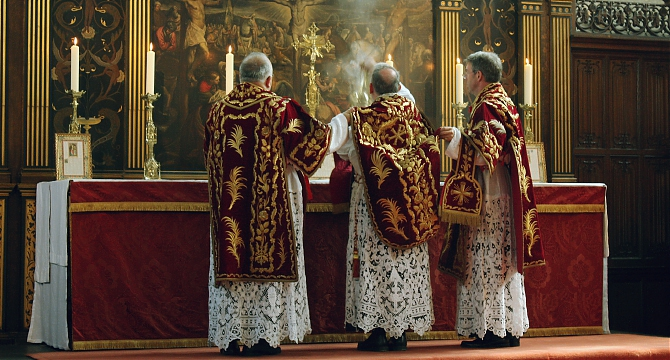

Historia
renowacja, Cmentarz parafialny i wojskowy, św. Mikołaj Bp - patron parafii, pochodzący z parafii
renowacja, Cmentarz parafialny i wojskowy, św. Mikołaj Bp - patron parafii, pochodzący z parafii
© 2023 Parafia Tymowa. All rights reserved.